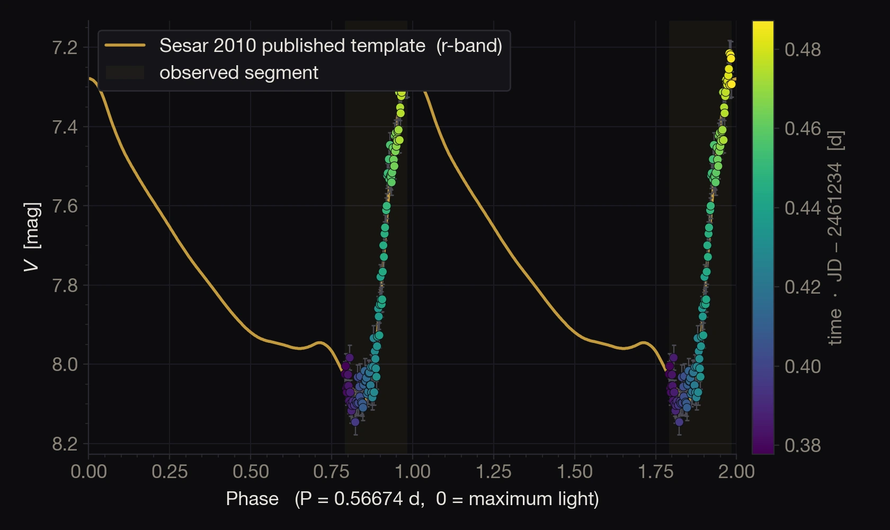

01 / Variable starsRR Lyrae

Follow a changing star through the night.
Identify the target and comparison stars in the solved field, track the differential curve during acquisition, then keep the full session for reduction.
Observed with ARGOS · reduced with star_var_script in Siril